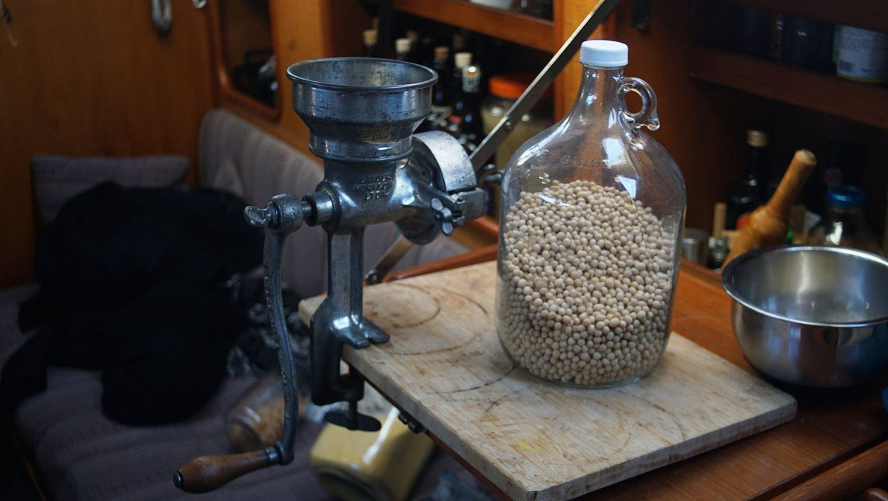
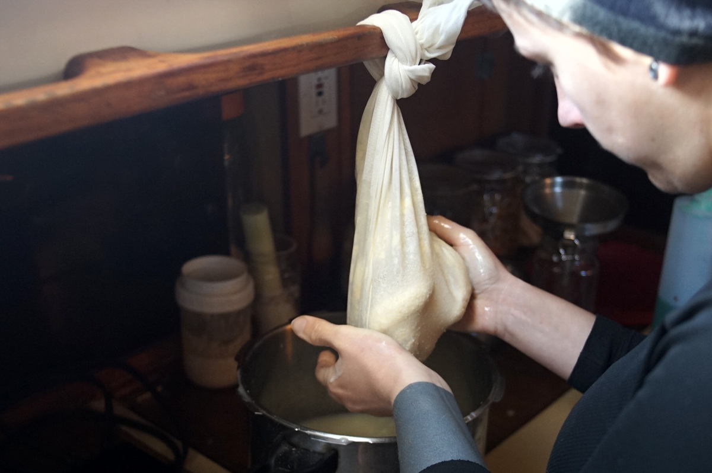
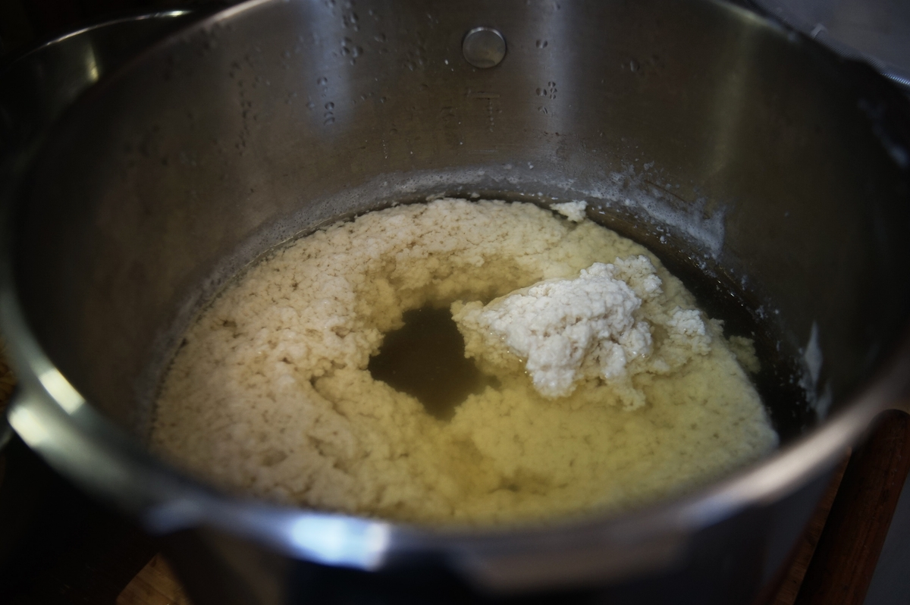
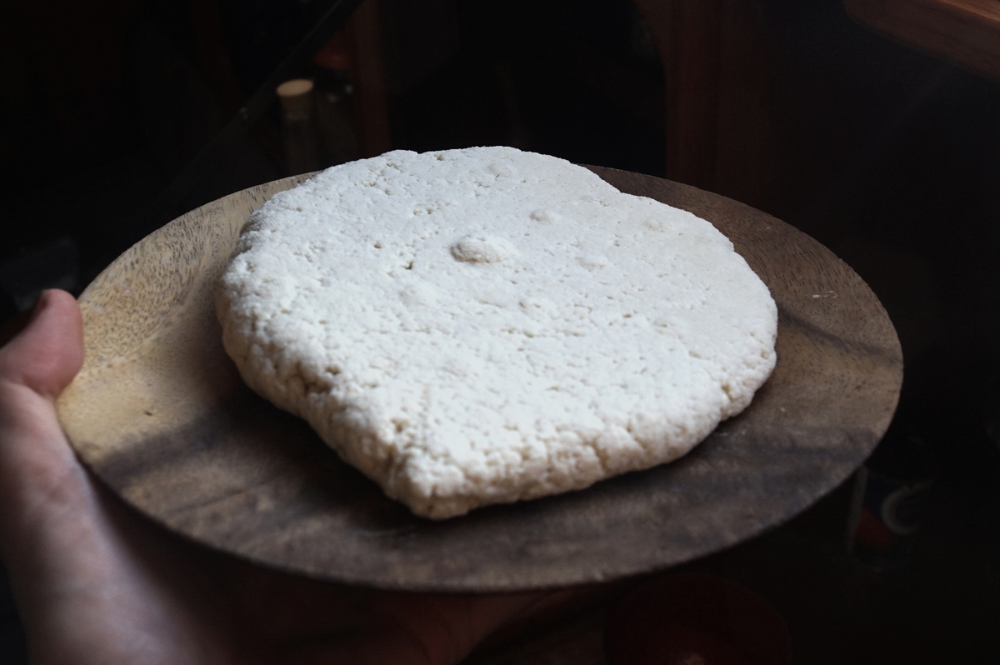

Soy flour tofu
400 g — 60 minutes

Over the years, we've experimented with various ways of making tofu, our favourite recipe is made from milling, and then soaking, the ground soy beans for a short time. We prefer making our own soy flour with a grain mill. It's possible to buy pre-ground flour, but make sure it isn't de-fatted.
Tofu is cheap to make. In Canada, 400g of soy beans costs about 0.35$ in bulk and makes a brick of tofu, the store bought equivalent 400g brick is 3.65$.
Making tofu from the flour is faster, there is no need to pre-soak the whole beans overnight, it also makes it easier for us to extract more milk.
Nigari is our preferred coagulant, as it imparts less flavor than lemon juice, vinegar or epsom salt.
We got the idea to make this kind of tofu from The Farm Vegetarian Cookbook by Louise Hagler, and found general tofu-making tips from Cooking With Tofu by Yoshiko Takeuchi.
Making tofu on a boat is great, we use the hand-rail to suspend the nylon bag when pressing the milk out of the soy pulp.
It is always exciting to see the tofu curds separate from the whey.
Making tofu in a bag only is a no-fuss option. You don't need a mold to make tofu. The tofu has little bumps on it because of the perforated surface we drained it on.
 soy beanswhole, 400 g
soy beanswhole, 400 g water2.2 liter
water2.2 liter- nigari7 g
- water250 ml
main
- Measure 400 g (2 cups) of whole soybeans, and grind into flour. As fine as you can manage. We use our grain mill to do this. This amount of whole soy beans yields about 2 1/2 cups of flour.
- Transfer flour to a bowl and mix in 2.2 liters (8 3/4 cups) of water. Let soak for 30 minutes.
- Line a large pot with a lightweight nylon of cotton bag, and strain the liquid through the bag and into the pot. Pick up the bag and squeeze the milk out, pressing hard with your hands. Then, transfer bag with the okara (the soy flour) to the bowl used previously in the recipe, and add 375 ml (1 1/2 cup) of water. Knead the okara in the water through the bag to extract as much of the leftover milk as possible. Then transfer the okara into another bowl and reserve (it's possible to make other recipes with it, don't toss it). Clean the nylon or cotton bag, we'll use it again later in the recipe. 
- Add the strained soy milk to the pot, and bring liquid to medium-high heat. In the meantime, prepare a solution of 7 g (1 1/2 tsp) of nigari into 250 ml (1 cup) of hot water. Reserve.
- When boiling, reduce heat and swirl in half of the nigari mixture. Stir slowly to push the nigari to the bottom of the pot. Add the second half of the solution, stirring on the surface, drawing a cross. The soy milk will start to coagulate. Cover, and simmer for 20 minutes. Turn off heat, and if tofu hasn't curdled enough, let rest for another 15 minutes. 
- When all the soy milk has formed into curds and there is only clear yellow whey left, the tofu is ready to be pressed. Using a slotted spoon, pick out the curds and transfer to a nylon bag, or into a tofu mold. If using a bag, twist the top of the bag to compress the tofu. We like to lay the bag over a slanted surface, like a cutting board at an angle that drains into the sink, and to place the bag there with a plate and weight overtop. The heavier the weight, and the longer you wait, the denser the tofu. For a softer tofu, don't weigh it down. 
- Eat as is, or cover with water and keep in a cool place.